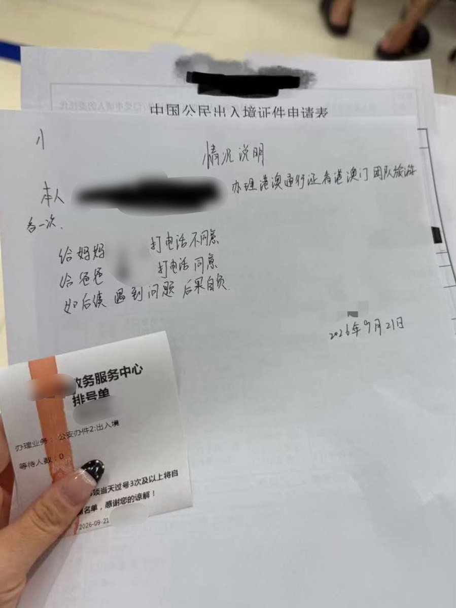

Shiori
@h191980276
@PigCCZhu 知情同意书来了

朱熙熙🐷魔法猪猪
@PigCCZhu
这种待遇中国大陆的跨性别者已经“享受”了几十年了
没有人认为不合理，基本盘都喜欢在社交媒体说，“应该让家长做决定”
好，现在办个护照需要通知家属了，而家属并没有决定权，只是通知而已，就有人要叫了 https://t.co/rQOeZcmLKj
李老师不是你老师
@whyyoutouzhele
9月21日，一名浙江网友发帖称，自己办理港澳通行证时，尽管已经成年，但还被要求给父母打电话确认。
该网友称办事人员告诉她03年以下的都要给家长打电话。
网友晒出的现场材料显示，她还被要求填写一份《情况说明》，其中写有“给妈妈打电话不同意”“给爸爸打电话同意”“出入境遇到问题后果自负”等内容。 https://t.co/PkdDE47Axu https://t.co/x7WhDhW7gk